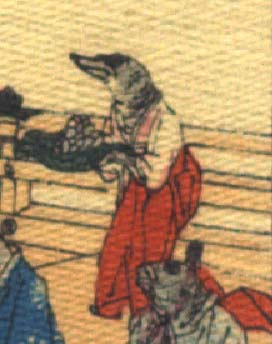

アシカのような頭部を持つ化物。頭部は黒く、口先が突き出ている。体は白い着物と赤い袴をまとい、女官のような装束をしている。両袖で食べ物を盛った器を捧げ持ち、前に進んでいる。
著作者：J.Dautremer／出典：親書誌：U426_nichibunken_0118：Monseigneur sac de riz／日付：2006／資源識別子：U426_nichibunken_0118_0003_0023
Copyright (c)2010- International Research Center for Japanese Studies, Kyoto, Japan. All rights reserved.